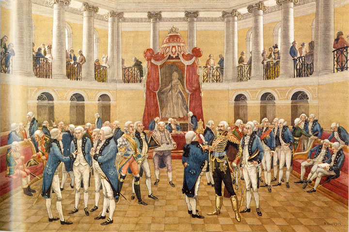
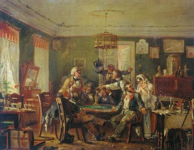
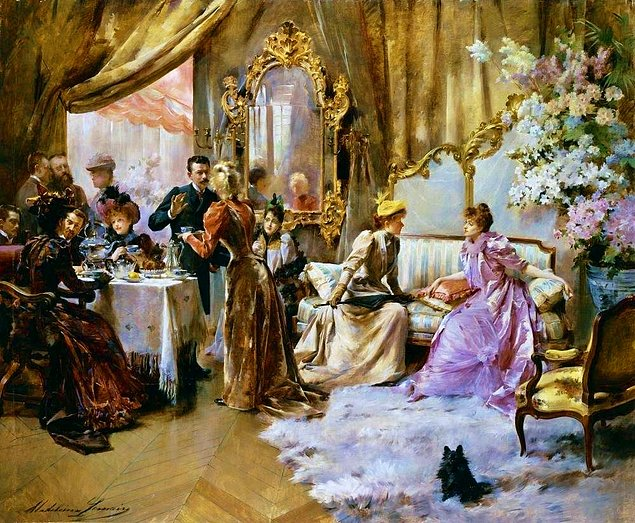
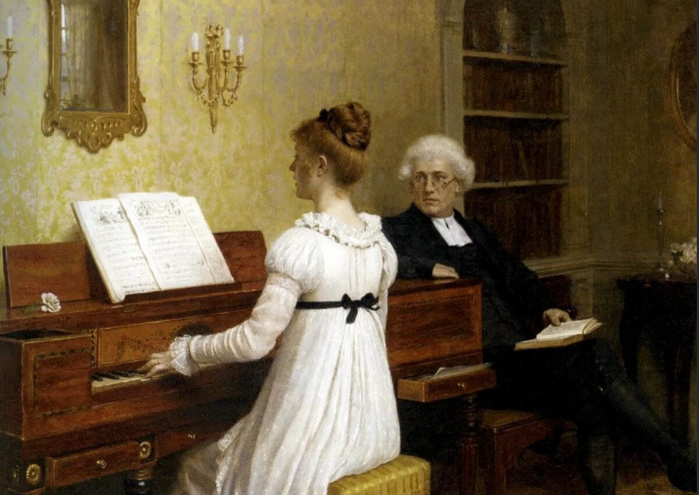

Основные сословия российского общества: быт обычаи и нравы дворян
Проект сделан: Волков Марк 8д; Ремиханов Асхаб 8д.

Дворянство в истории обычно ассоциируется с привилегиями, изысканностью и аристократическим образом жизни. В различных странах и эпохах быт дворян мог отличаться, но обычно дворяне жили в роскошных усадьбах или замках, окруженных прекрасными парками и садами. Они вели обширные поместные хозяйства, владели многочисленными слугами и подчиненными. Дворяне проводили много времени на общественных мероприятиях, балах и охотах, ведя активный общественный образ жизни.
В их роскошно обставленных домах присутствовали богатые картины, предметы искусства, шедевры ремесленного искусства. У дворян были свои традиции, обычаи и ритуалы, которые подчеркивали их высокое положение в обществе. Они обладали обширными знаниями и образованием, а также занимали высокие посты в государственной службе или военных структурах.
Однако быт дворянства не был всегда легким и безмятежным. Они были обязаны поддерживать свое высокое социальное положение, участвовать в политической и социальной жизни, а также нести ответственность за благополучие своих владений и подданных. Дворянство часто служило элитой в обществе, олицетворяя стабильность, культуру и традиции.
Со временем образ жизни дворянства изменился, привилегии постепенно уменьшились, а их роль в обществе стала менее значимой. Однако и сегодня дворянство остается частью истории и культуры многих стран, сохраняя свое особенное место в коллективной памяти.
Важным аспектом быта дворян были их образование и культурные интересы. Дворяне обычно обладали широким кругозором, изучали литературу, музыку, искусство. Многие из них были покровителями искусства и наук, поддерживая талантливых художников, композиторов и ученых. Это способствовало развитию культуры и науки в различных странах и эпохах.
Следует отметить, что дворянство также имело свои обязанности и ответственности перед обществом. Они часто занимали важные посты в правительстве, армии или церкви, принимали участие в политической жизни страны. Дворяне были образцом для подражания для других членов общества, взяв на себя роль лидеров и защитников общественного порядка.
Со временем роль дворянства в обществе изменилась. С развитием демократических идей и отменой феодальных привилегий и категорий, понятие дворянства постепенно утратило свою значимость. Однако и в наше время история дворянства продолжает вдохновлять и увлекать многих людей, оставляя яркий след в культуре и общественном сознании.
Таким образом, быт дворянства представляет собой уникальный аспект истории и культуры многих стран, отражая особенности социальной и политической организации общества в разные эпохи. Дворянство оставило незабываемый след в истории и представляет интересный объект изучения для историков, культурологов и обществоведов.

Обычаи русского дворянства были сложны и многогранны. Вот подробное описание: Обычаи дворянства в России XVIII-XIX веков были тесно связаны с их социальным статусом и образом жизни. Дворяне следовали кодексу чести, который включал в себя дуэли, стремление к образованию и воспитанию в духе европейской культуры. Они часто говорили на французском языке, который считался языком высшего общества, и устраивали роскошные балы и приёмы. Воспитание и образование дворянских детей начиналось с раннего возраста. Мальчиков готовили к службе государству или военной карьере, а девочек — к замужеству и ведению домашнего хозяйства. Образование включало изучение иностранных языков, литературы, истории, а также музыки и танцев. Повседневная жизнь дворян была наполнена различными занятиями. Утро начиналось с личной гигиены и завтрака, после чего последовали чтение, прогулки и посещение общественных мероприятий. Вечера обычно проводились в кругу семьи или гостей, с ужином и развлечениями, такими как игра в карты, музыка или чтение литературных произведений. Сезонные традиции также играли важную роль в жизни дворян. Летом они часто отправлялись в свои усадьбы, где занимались сельским хозяйством, охотой и устройством праздников. Зимой возвращались в город, чтобы принять участие в светской жизни, посещать театры и балы. Благотворительность и меценатство были важной частью жизни многих дворян. Они поддерживали искусство, науку и образование, финансировали строительство школ, больниц и других общественных учреждений. Праздники и торжества занимали особое место в жизни дворян. Они отмечали не только традиционные русские праздники, но и вводили в свой календарь европейские традиции. Например, Рождество и Пасха отмечались с особым размахом, с участием всей семьи, слуг и крестьян. В эти дни устраивались богослужения, застолья и благотворительные акции. Летние месяцы были временем отдыха и развлечений. Дворяне устраивали пикники, охоту, рыбалку и путешествия по своим владениям. Летние усадьбы становились местом сбора друзей и знакомых, где они могли наслаждаться природой и свежим воздухом. Зимний сезон был наполнен светскими мероприятиями. Дворяне посещали балы, оперы, театры и литературные салоны. Зимние праздники, такие как Масленица и Святки, отмечались с особым размахом, с участием маскарадов, катаний на санях и фейерверков. Дуэли были частью кодекса чести дворянства. Они проводились по строгим правилам и часто являлись результатом споров или оскорблений. Дуэль не всегда заканчивалась смертью одного из участников, но всегда требовала соблюдения определенного ритуала. Брак и семейные отношения также подчинялись определенным традициям. Браки часто заключались по расчету, чтобы укрепить семейные связи или улучшить финансовое положение. Однако существовали и любовные союзы, которые приводили к созданию крепких семейных уз. Воспитание детей было наполнено строгостью и дисциплиной. Дети с раннего возраста учились чтению, письму, основам религии и морали. Мальчиков готовили к военной или государственной службе, а девочек — к роли хозяйки и матери. Эти обычаи и традиции формировали уникальный образ жизни русского дворянства, который сочетал в себе европейское влияние и русские традиции. Они отражали сложность и разнообразие культурного и социального ландшафта России того времени.
Образование и интеллектуальная жизнь: Дворянство уделяло большое внимание образованию. Многие дворяне получали образование за границей или приглашали иностранных учителей. Интеллектуальные занятия, такие как чтение, письмо, изучение иностранных языков и искусств, считались неотъемлемой частью жизни образованного человека. Светская жизнь: Дворяне активно участвовали в светской жизни. Они посещали балы, приемы и другие мероприятия, где демонстрировали свои манеры, одежду и умение вести беседу. Светская жизнь была полна ритуалов и этикета, которые строго соблюдались. Искусство и культура: Дворянство играло ключевую роль в развитии русской культуры и искусства. Они были покровителями художников, музыкантов и писателей, а также активно участвовали в культурной жизни, создавая театры и художественные галереи. Владения и управление имуществом: Дворяне владели землями и крестьянами, что накладывало на них большую ответственность. Они управляли своими владениями, стремясь увеличить доходы и улучшить условия жизни своих подданных. Благотворительность и общественная деятельность: Многие дворяне занимались благотворительностью и общественной деятельностью. Они основывали школы, больницы и приюты, а также участвовали в общественных организациях и политической жизни страны. Семейная жизнь: Семья занимала центральное место в жизни дворян. Семейные ценности, такие как честь, долг и верность, были высоко ценятся. Воспитание детей, браки и семейные традиции строго регулировались и передавались из поколения в поколение. Патриархальность: Семейная жизнь дворянства была патриархальной. Глава семьи обладал значительной властью и отвечал за благосостояние всех её членов. Это включало решения о браках детей, управление семейным бюджетом и представление семьи в общественной жизни. Духовность и религия: Религия играла важную роль в жизни дворян. Православие влияло на многие аспекты их повседневной жизни, включая праздники, обряды и семейные традиции. Дворяне часто строили часовни или церкви на своих усадьбах. Военная служба: Военная карьера была традиционным выбором для многих дворян. Служба в армии или на флоте считалась вопросом чести и долга перед Отечеством. Многие дворяне начинали свою карьеру в юном возрасте, поступая в кадетские корпуса. Управление поместьями: Дворяне часто проживали в поместьях, которые были центрами их земельных владений. Управление поместьем требовало знаний в сельском хозяйстве, экономике и управлении персоналом. Многие дворяне принимали активное участие в жизни своих поместий, стремясь к их процветанию. Меценатство и благотворительность: Дворяне часто выступали меценатами искусств и наук. Они финансировали образовательные учреждения, поддерживали талантливых ученых и художников, а также участвовали в благотворительных проектах, направленных на поддержку бедных и нуждающихся. Законы и правосудие: Дворяне имели определенные привилегии в судебной системе. Они могли быть избраны на должности судей и присяжных, а также участвовать в законодательной деятельности через Государственную Думу или Совет Империи. Эти элементы нравов дворянства отражают сложную социальную структуру и культурные традиции Российской империи.